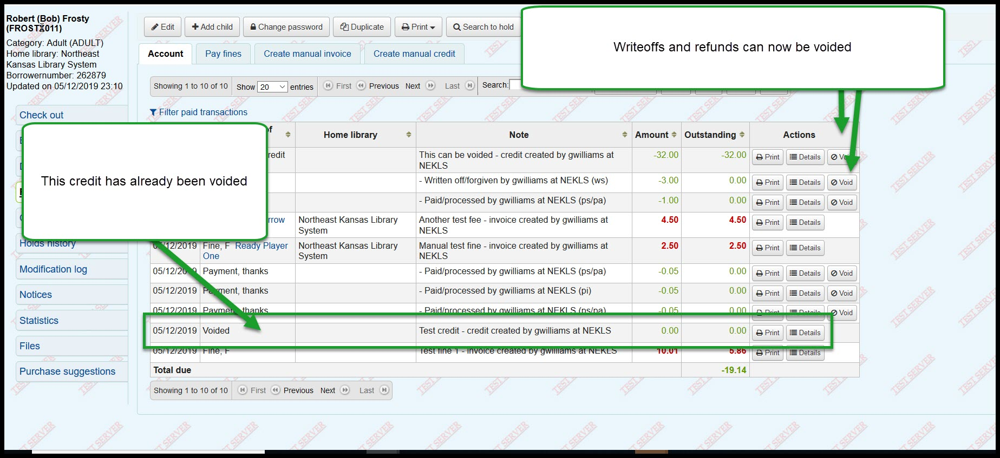
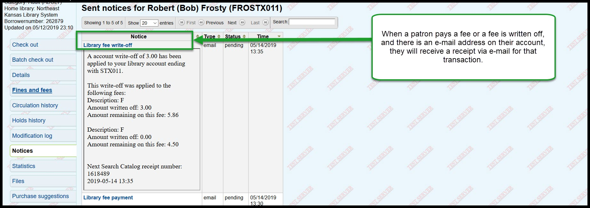
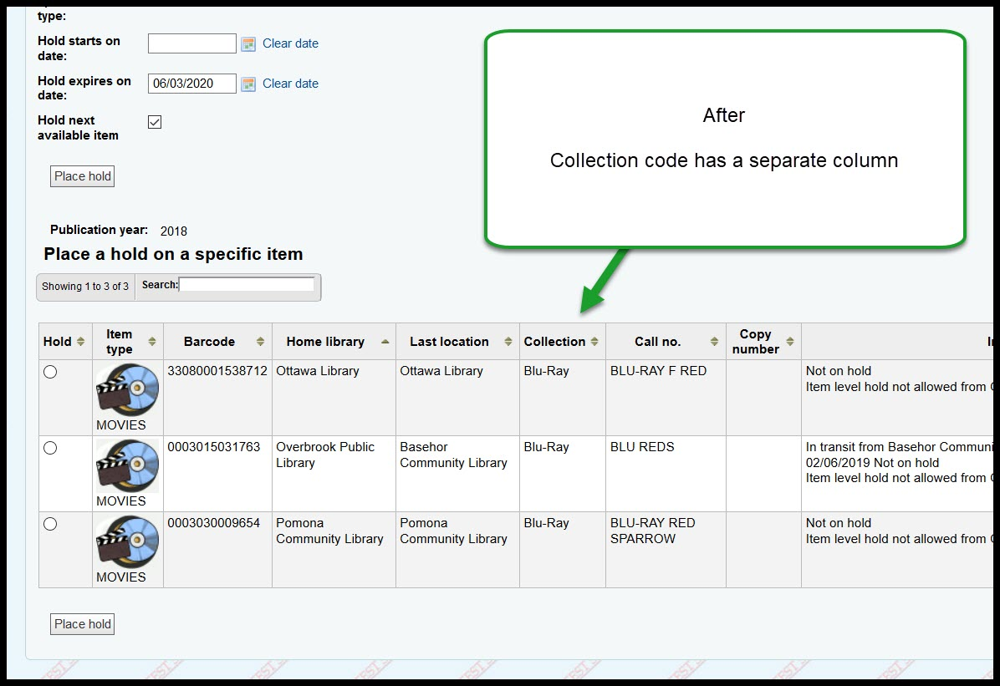
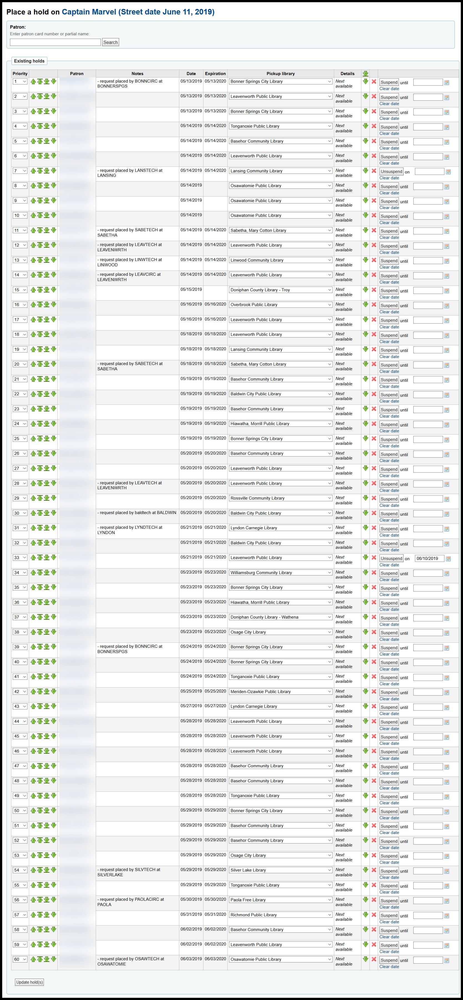
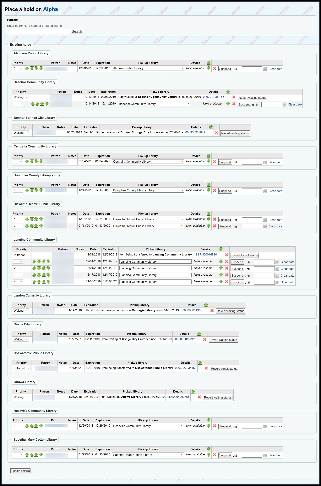
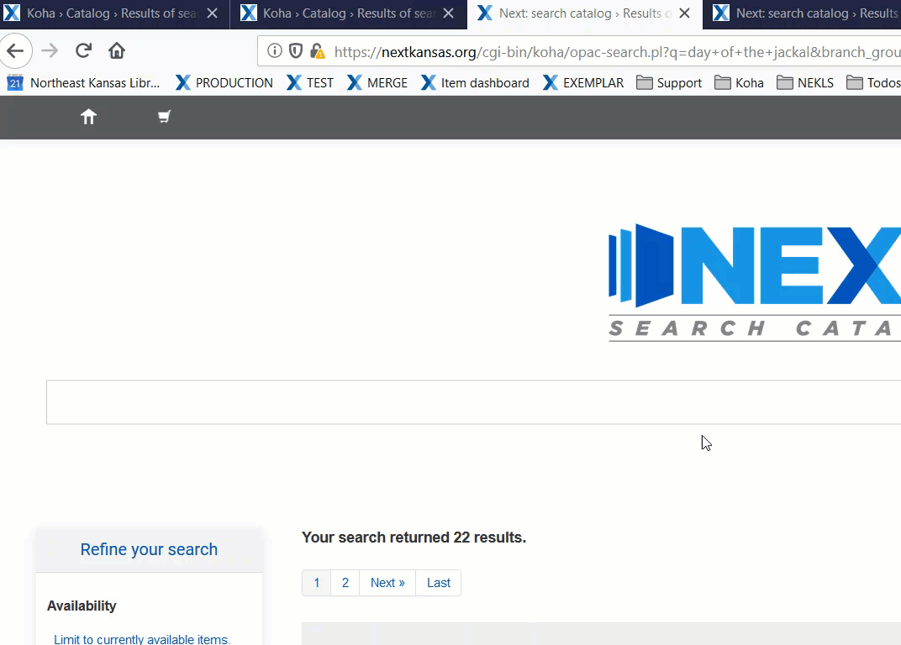
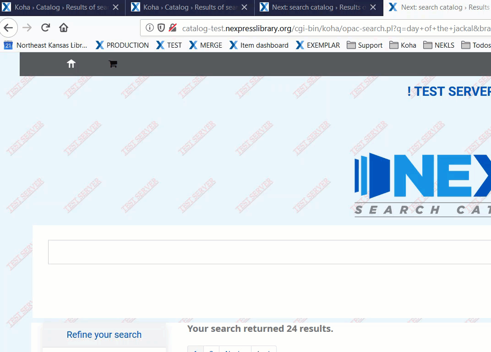
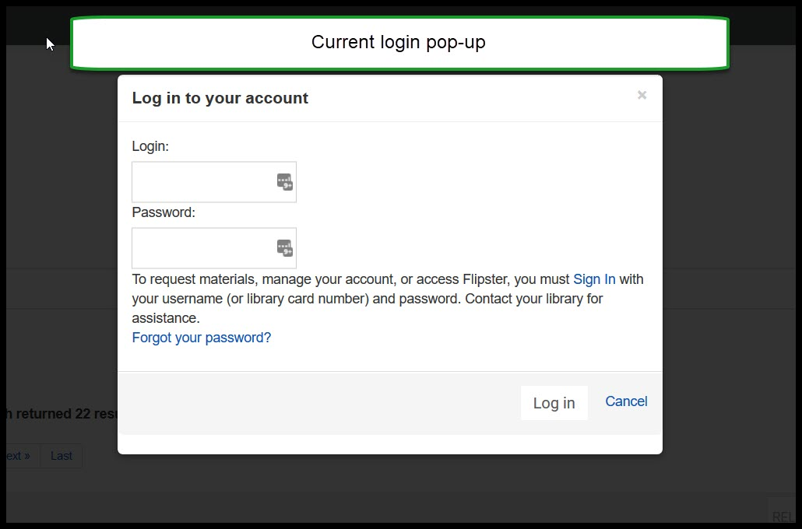
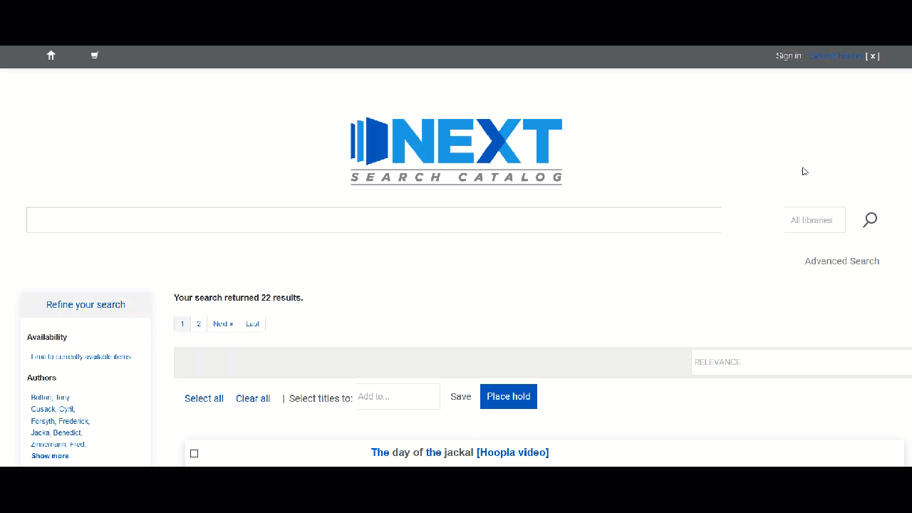
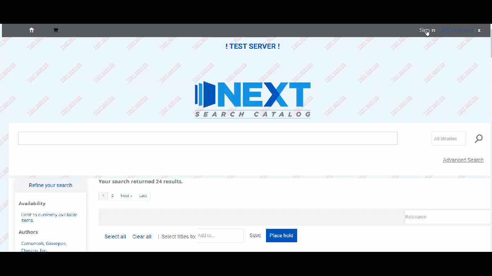

Koha 18.11 Trainng Part 2¶
Fines changes¶
Item “Lost” twice by the same patron isn’t billed the second time¶
- This cannot be shown, but this is an outline of the circumstances:
- Patron checks out an item and returns it more than 45 days overdue and is billed for the item
- Patron returns the item and the cost of the item is refunded
- Patron checks out the item again and keeps it more than 45 days overdue again
- Up until now, Koha has not been able to bill the patron for the second time the item has been declared “Lost”
Paying fines on accounts with credits¶
Also can’t be shown. If a patron had a fee and a credit, a bug would sometimes cause additional payments to fail.
Item home branch shows in fee table¶
The patron’s fines table will now show item home library information.

Writeoff selected¶
Multiple fee lines can be written off at once with the new “Write off selected” button.

Void credits and writoffs¶
It is now possible to void writeoffs and credits. This should simplify some of the payment issues we’ve had as the accounts rewrite has been underway.

Email receipts for payments¶
When a patron pays a fee or a fee is written off, AND the patron has an e-mail address, the patron will receive an e-mail receipt for the payment/writeoff.

- This is a global system setting - currently the messages cannot be configured on a library-by-library basis.
Holds/Requests¶
BUG! - cannot place item level Requests¶
This is a bug and should be fixed soon. Our tentative date for the upgrade is June 15 and I will keep an eye on this bug and ask that we not be upgraded until it is fixed. I’m pretty confident, though, that it should be fixed by June 15 (it may actually be fixed by May 15).
Collection code added to holds table¶
Collection codes will be added to the holds table in a separate column:
Before:

After:

Split holds queue¶
The layout of the holds queue is going to look radically different. It will show the holds for each library in a separate group.
Before:
After:

OPAC¶
Many CSS elements have changed - so if something looks weird or doesn’t look right, be sure to let us know. Dan and I should be able to change anything that doesn’t work correctly caused by changes to the CSS.¶
Cart opens with one click¶
Currently you have to click twice to open the cart on the OPAC. Only one click will be necessary after the upgrade.
Before:
After:

Login modal has changed¶
The Login window for patrons has changed. This will look different to patrons.
Before:
After:

Logging in during search keeps you in search¶
Currently if a patron does a search in the OPAC before they log into their account, once they log in, they have to re-run the search. In the new version, after logging in, the patron will be redirected to the search they were in the middle of.
Before:
After:

Expanded data for branchcode and userid in pages when a user is logged in¶
This is a behind the scenes thing, but it can make some parts of the OPAC customizable on a branch-by-branch basis